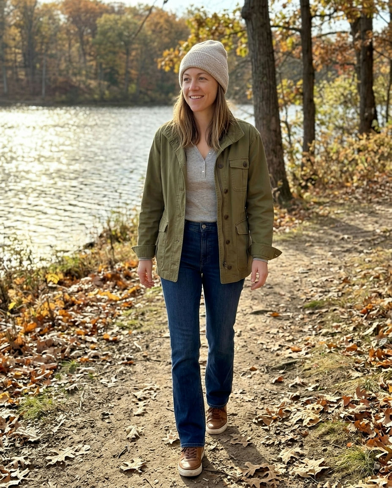

StoryLooks · AIA cool fall walk by the lake
Macbride Trail Walk
Layer this light grey henley beneath an olive utility jacket to block the lakeside chill. Bootcut indigo jeans and sturdy toffee leather sneakers make walking the wooded paths easy and comfortable.
Shop this look
Shown on our model by AI. Check the store for exact color and sizing.